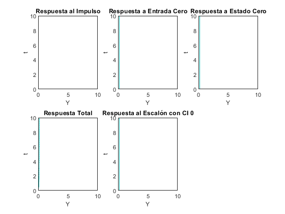

Práctica 9: Sistemas diferenciales y en diferencias
* Moreno Castro José Pablo * Pedraza Ocampo Eduardo * Portillo Martínez Carolina * Reyes Alvarez Angel
Contents
Sistemas diferenciales
Para sistemas diferenciales realizamos este programa acorde a los puntos y características que se mencionan en la practica
syms s t Y ecuacion_diferencial = Y*s^2 + 3*Y*s + 5*Y - 1 == 0; condiciones_iniciales_Y = subs(Y, 0) == 0; condiciones_iniciales_dY = subs(diff(Y), 0) == 0; condiciones_iniciales = [condiciones_iniciales_Y, condiciones_iniciales_dY]; u(t) = heaviside(t); disp('Ecuación Diferencial Inicializada:'); disp(ecuacion_diferencial); funcion_transferencia = laplace(ecuacion_diferencial, t, s) / laplace(u, t, s); disp('Función de Transferencia:'); disp(funcion_transferencia); respuesta_impulso = ilaplace(funcion_transferencia, s, t); subplot(2, 3, 1); ezplot(respuesta_impulso, [0, 10]); title('Respuesta al Impulso'); respuesta_entrada_cero = ilaplace(funcion_transferencia * laplace(u, t, s), s, t); subplot(2, 3, 2); ezplot(respuesta_entrada_cero, [0, 10]); title('Respuesta a Entrada Cero'); respuesta_estado_cero = ilaplace(funcion_transferencia * laplace(u, t, s), s, t); subplot(2, 3, 3); ezplot(respuesta_estado_cero, [0, 10]); title('Respuesta a Estado Cero'); respuesta_total = ilaplace(laplace(ecuacion_diferencial, t, s) * laplace(u, t, s), s, t); subplot(2, 3, 4); ezplot(respuesta_total, [0, 10]); title('Respuesta Total'); respuesta_escalon_cero = ilaplace(funcion_transferencia * laplace(u, t, s), s, t); subplot(2, 3, 5); ezplot(respuesta_escalon_cero, [0, 10]); title('Respuesta al Escalón con CI 0');
Ecuación Diferencial Inicializada: Y*s^2 + 3*Y*s + 5*Y - 1 == 0 Función de Transferencia: Y*s^2 + 3*Y*s + 5*Y - 1 == 0 Warning: Contour not rendered for constant ZData
Entregables sistemas en diferencias
Para sistemas diferenciales realizamos el siguiente programa con las características mencionadas
function sistemaEnDiferencias(equation, inputFunction, nTimeSteps) syms n Z; system = sym(equation); transferFunction = simplify(ztrans(system, n, Z) / ztrans(sym(inputFunction), n, Z)); impulseResponse = simplify(iztrans(transferFunction * ztrans(sym(inputFunction), n, Z), Z, n)); figure; subplot(1,2,1); fplot(transferFunction, [0 nTimeSteps]); title('Función de Transferencia Aproximada'); subplot(1,2,2); fplot(impulseResponse, [0 nTimeSteps]); title('Respuesta al Impulso Aproximada'); sgtitle('Análisis de Sistema en Diferencias'); end